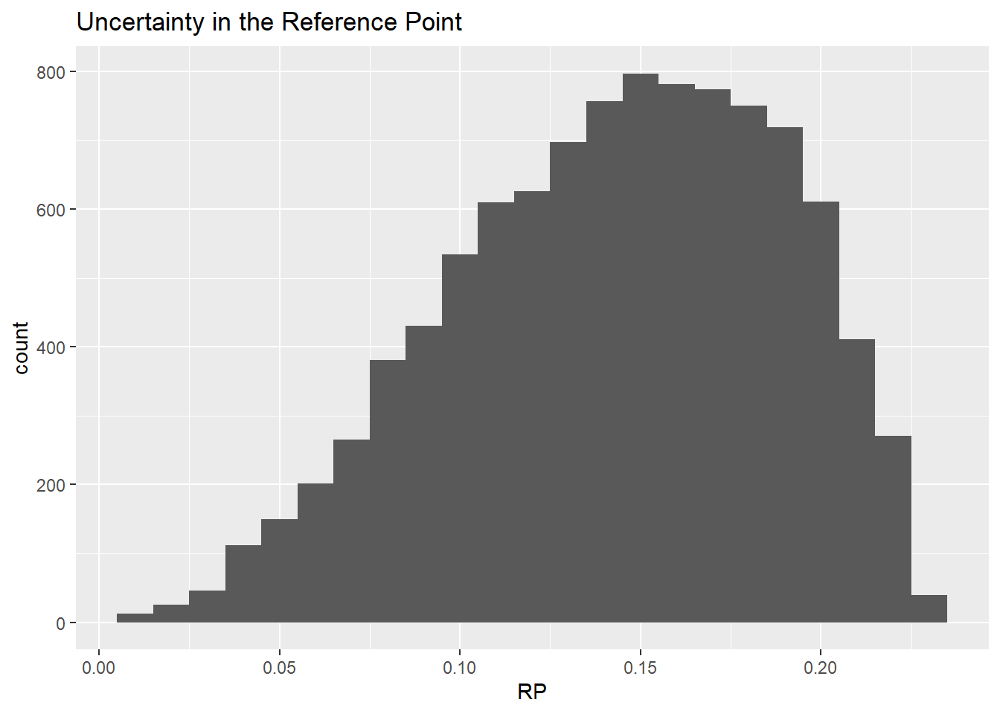
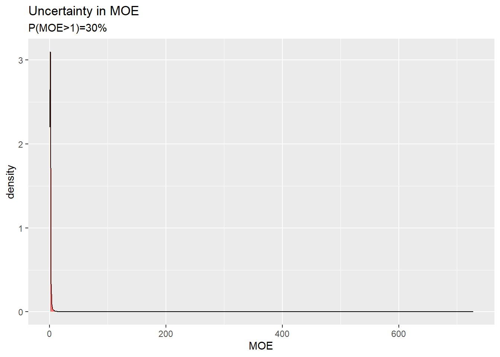
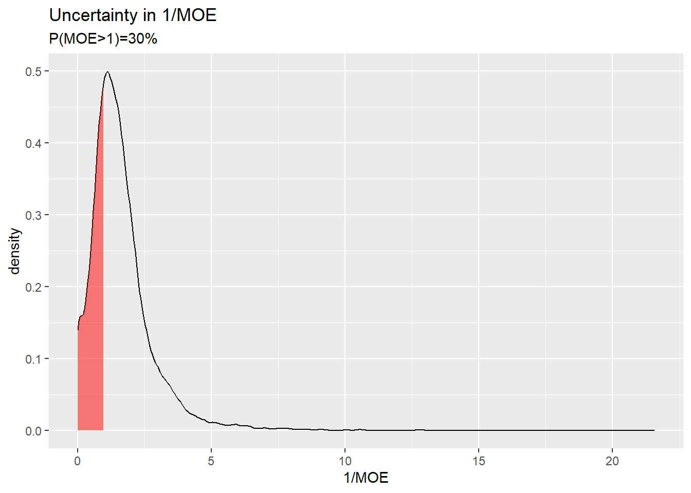

0.23 * rbeta(n = 10, shape1 = 3.15, shape2 = 1.92) [1] 0.13077136 0.03174760 0.15496645 0.09978102 0.16371297 0.16942681
[7] 0.10445071 0.20884719 0.11043006 0.10056032RiskHunt3r
We can never be completely certain about the future, either in science, or in everyday life. Even when there is strong evidence that something will happen, there will almost always be uncertainty about the outcome. But by taking account of this uncertainty, we often can make better, more transparent decisions about things that may affect the outcome.
The European Food Safety Authority (EFSA) has developed a guidance for uncertainty analysis in scientific assessment which requires all assessment to say
The reason is that uncertainty of scientific conclusions has important implications for decision making and it is important to communicate this uncertainty for the transparency of assessments.
Here we perform a tiered uncertainty analysis, consisting of probability bound analysis followed by a fully probabilistic analysis.
A human chemical risk assessment problem
A probabilistic uncertainty analysis using input from expert judgement and Monte Carlo-simulation
A probability bound analysis using probability intervals from the same distributions
Tutorial videos on EFSA’s topic page on uncertainty (examples in the chemical area) by Andy Hart.
Key concepts (17 minutes)
Methods and options for basic assessment of uncertainty (27 minutes)
Refined options for assessing uncertainty (30 minutes).
Consider a human health risk assessment of inorganic Arsenic (iAs).
A Reference Point \(RP\) of 0.062 μg iAs/kg bw per day was identified by the CONTAM Panel for skin cancer. This value is the BMDL from a model average of BMD modelling on skin cancer.
Model Averaged BMD model
| BMDL | BMD | BMDU |
|---|---|---|
| 0.062 | 0.147 | 0.21 |
The range of the dietary exposure estimates for iAs was assessed as
0.03 - 0.15 μg/kg bw per day for an average adult consumer and
0.07 - 0.33 μg/kg bw per day for a high-level adult consumers in Europe.
Let us denote an estimate of a high exposure as \(HE\).
A Margin of Exposure (MOE) is defined as \[MOE=\frac{RP}{HE}\]
In the risk assessment on iAs the derived MOEs range between
2.1 - 0.4 for average adult and
0.9 - 0.2 for high level adult consumers, respectively.
A MOE of 1 describes the exposure level that could be associated with a 5% increase relative to the background incidence for skin cancer. (Note that the value 5% comes from the BMD modelling).
A MOE greater than 1, implies that a High Exposure is not exceeding the Reference Point, and thereby a low risk.
Risk managers set what is an acceptable MOE. It can e.g. be 1, 10 or 1000.
The purpose of the assessment is to conclude if the MOE is above the threshold for the acceptable MOE. Here this threshold was set to 1.
The purpose of the uncertainty analysis is to identify sources of uncertainty and evaluate their combined impact on the answer to the overall assessment question.
In this case it the outcome of interest is if the MOE is above the threshold of 1.
A quantitative uncertainty analysis can be specified to result in an expression of the expert’s certainty in the outcome of interest as a % probability, i.e. \(P(MOE > 1)\).
The risk managers has informed the risk assessors that they find a certainty of 90% or more as acceptable for decision making.
\(P(MOE > 1)\)
\(P(HE < RP)\)
\(P(\frac{HE}{RP}< 1)\)
Sources of uncertainty have been identified related to inputs and methods in the parts of the assessment, i.e. related to:
Further information about these sources can be found in the drafted assessment.
There are several options to evaluate the combined impact of all these sources of uncertainty on the conclusion whether the MOE is greater than 1.
A tiered uncertainty analysis is done in several steps steps:
The basic option for uncertainty analysis is to assess the combined impact in a single step using expert judgement. This is done by asking the experts to agree how certain they are as a group that the MOE is greater than 1, given that all identified (non-standard or standard) sources of uncertainty has been resolved.
This can be done by reaching a consensus judgement (following procedures for expert knowledge elicitation using behavioural aggregation)
This judgement requires expertise on both toxicity and exposure assessment.
This is a useful option when the Highest Exposure is far below the Reference Point.
A refined approach is needed when there is a small difference between the Reference Point and the Highest Exposure.
A refined option is to assess uncertainties separately before combining them by calculations and assessing overall uncertainty.
First we explore how to do this with probability bounds.
In this example, the experts are asked to express their uncertainty in the Reference Point and in a High Exposure for adults in the EU.
The experts judge that they are 95% certain that the Reference Point is above 0.062 μg iAs/kg bw per day.
\[P(RP > 0.062) = 0.95\]
| P below | value | P above |
|---|---|---|
| 5% | 0.062 | 95% |
In some situations, RP is the BMDL and then it is difficult to talk about RP as some other value. If so, one can introduce an uncertainty factor (UF) that considers uncertainty associated with the hazard assessment. The focus is then on \(RP/UF\) instead of \(RP\).
The experts then judge that they are 90% certain that a High Exposure is below 0.33 μg iAs/kg bw per day.
\[P( HE < 0.33) = 0.90\]
| P below | value | P above |
|---|---|---|
| 90% | 0.33 | 10% |
Then we use probability bounds analysis (and the rule of “lost probabilities” as described in the third video) to calculate that it is at least \[ 100 - [(100-95)+(100-90)]=85\%\] probable that the ratio of the highest estimate of High Exposure to the Reference Point is less than or equal than 0.33/0.062 = 5.32
\[P(\frac{HE}{RP} < 5.32) \geq 85\%\]
| P below | value | P above |
|---|---|---|
| \(\leq 15\%\) | 5.32 | \(\geq 85\%\) |
Unfortunately, this result is not enough to reach a conclusion whether a High Exposure is below the Reference Point (i.e. that the MOE is greater than 1). See the callout box how the refined option with probability bounds can be designed to consider what level of certainty that is required.
The refined option with probability bounds can be modified to consider the probability threshold for a “firm conclusion” (also known as the level for practical certainty). In this example, the risk managers and the experts have agreed that experts must be at least 90% certain that a High Exposure \(HE\) is below the Reference Point \(RP\) in order for risk managers to make a decision.
This means that the assessment is conclusive when the experts are at least 90% certain that there is a health concern or that they are at least 90% certain that there is no a health concern.
E.g. \(100\% - 90\% = 10\%\)
E.g. \(5\%\) and \(5\%\)
E.g. \(100\% - 5\% = 95\%\)
E.g. \(P(HE < x) = 95\%\)
E.g. \(100\% - 5\% = 95\%\)
E.g. \(P(RP < y) = 95\%\)
\(\frac{x}{y}\)
E.g. Is \(\frac{x}{y} < 1\)?
If it is not possible to conclude with high enough certainty, we move on to a refined option for uncertainty analysis with probability distributions or consider collecting more data.
A refined option can alternatively be done with with probability distributions which are combined by Monte Carlo simulation.
This is an option, when the outcome of a probability bound analysis was not conclusive.
It can also be an option when the assessors prefers to choose to justify probability distributions for uncertainty from available information, combine uncertainties by performing the probability calculations, and then ask the experts to make a judgement on the outcome of interest directly. Note that an explicit elicitation of the outcome of interest following the Monte Carlo simulation is a condition for this approach to result in a characterisation of the experts uncertainty considering the combined impact of all sources of uncertainty in the assessment.
A probability distribution representing uncertainty in the Reference Point can be taken from the BMD uncertainty distribution generated by bootstrapping or Bayesian modelling.
Here is an example of what it looks like when using the EFSA BMD software:

We let the BMDL, the BMD, and the BMDU define the 5th percentile (P05), the median (P50), and the 95th percentile (P95) of the probability distribution for uncertainty in the RP.
| BMDL | BMD | BMDU |
|---|---|---|
| P05 | P50 | P95 |
| 0.062 | 0.147 | 0.21 |
COMMENT: Ths approach ignores additional sources of uncertainty than those considered in the model, hence we need to draft how to consider those as well. e.g. by adjusting the specification of the quantiles.

As an example, the remaining instructions will use the distribution selected by me. You can replace the code with your own distribution or use mine. I used 0 and 0.23 as the plausible range and selected a generalised beta-distribution over the interval 0 and 0.23 for which random draws can be generated by
0.23 * rbeta(n = 10, shape1 = 3.15, shape2 = 1.92) [1] 0.13077136 0.03174760 0.15496645 0.09978102 0.16371297 0.16942681
[7] 0.10445071 0.20884719 0.11043006 0.10056032This beta-distribution is defined as
\(\frac{RP}{0.23} \sim beta(3.15, 1.92)\)
Let us visualise the sample from the distribution in a histogram.

A probability distribution representing uncertainty in the estimates of High Exposure over different surveys can be specified by assuming that the range of the dietary exposure estimates corresponds to the bounds of an 80% probability interval.
| min HE | max HE |
|---|---|
| P10 | P90 |
| 0.07 | 0.33 |
One choice could be to use a normal distribution to represent uncertainty in a High Exposure. A normal distribution has two parameters, the mean (\(\mu\)) and the standard deviation (\(\sigma\)).
\[HE \sim N(\mu,\sigma)\]
We derive the mean by taking the mid value in the range
\[ \mu = \frac{0.33+0.07}{2}= 0.2\] The standard deviation is specified by considering the formula for a 90% quantile in the normal distributions as a function of the parameters.
\[ P90 = \mu + 1.28\cdot \sigma\]
and rearranging it to be a function of \(\sigma\)
\[ \sigma = \frac{P90 - \mu}{1.28} = \frac{0.33-0.13}{1.28}=0.1\]
Specification of the parameters and draw of random numbers from the normal distribution
m = (0.07+0.33)/2
s = (0.33-m)/qnorm(0.9)
he = rnorm(n = niter, mean = m, sd = s)
he[he<0] = 0 # truncateThe distributions for High Exposure and the Reference Point overlap.
The calculated probability that the MOE is above 1 is 30 %.
moe = rp/he
mean(moe>1)
In my analysis, the distribution for MOE looks weird. The reason is that the probability distribution for exposure generates values that are zero or close to zero, and when we divide by that the MOE is extremely large.
Uncertainty in the ratio HE over RP (i.e. 1/MOE) offers a better visualisation of the generated distribution.
df <- density(he/rp, from=0)
df <- data.frame(x=df$x,y=df$y)
ggplot(data.frame(x=df$x,y=df$y),aes(x=x, y=y)) +
geom_line() +
geom_ribbon(data=subset(df,x<1), aes(x=x,ymax=y),ymin=0,fill="red", alpha=0.5) +
xlab("1/MOE") +
ylab("density") +
ggtitle("Uncertainty in 1/MOE", subtitle=paste0("P(MOE>1)=",round(mean(rp/he>1)*100),"%"))
The red area corresponds to a MOE greater than 1.
As a final step, the experts are invited to adjust this probability upwards or downwards considering additional sources of uncertainty, not previously taken into account in the analysis.
For the purpose of this exercise we assume that the experts subsequently judged that any additional sources of uncertainty were small enough that there was no need to adjust the calculated % probability that the MOE is above 1.
An additional sources of uncertainty could e.g. be the choice of distributions used in the Monte Carlo simulation and any limitations in the quality of the exposure and toxicity data that are not taken into account in those distributions.
In my analysis, the attempts to arrive at a high certainty that the MOE is acceptable (i.e. above 1) has failed. This is because the level of certainty for the outcome of interest is 30% which is not in the region of practical certainty (i.e. <10% or >90%).
| Health concern | Inconclusive | No health concern |
|---|---|---|
| <10% | 10 - 90% | >90% |
At this point, the assessment should be reported as inconclusive.
The risk managers can decide to support generation of new studies to fill data gaps and perform a re-evaluation of the risk assessment.
An alternative choice for a probability distribution to represent uncertainty in a High Exposure would be a distribution that resonates properties of percentiles. to be continued